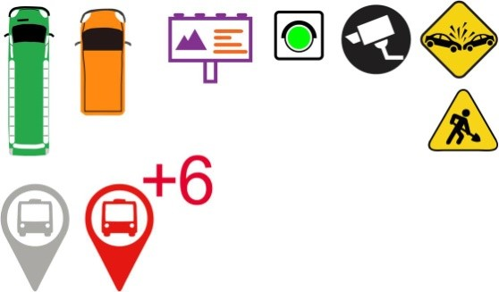

Toggle navigation
Menu
Zihan Song
WORK
ABOUT
BLOG
2016 Esri UC Plenary Demo
Real- Time Demo, from Geoevent Extention for Server
I was an intern at Esri GeoEvent team during 2016 summer. GeoEvent team's UC Plenary demo is the first project I worked on during my internship , and it’s also the most influential project I’ve worked on so far. This demo is about Auckland real- time bus transit system, and it also shows concept of IoT (internet of things) of smart city: connecting with traffic lights, traffic signs, road cameras and road events. This demo shows the power of real- time cartography: people could have a sense of what’s going on in road networks from time to time. Bus delays, traffic congestions or road works could be reflected on map dynamically.
I worked together with Adam Mollenkopf, Suzanne Foss, and Thomas Paschke to build this web application. We had regular touch- point meeting every day during weeks before UC. We would usually discuss what we had accomplished, and what we needed to finish. Adam would come up with PBIs (product backlog item in
Scrum
) for the whole day after discussion and send out to the team. Then we started working on our tasks. We had dozens of PBIs and then we discussed using slack.
The process sounds really smooth and working, but then I learnt my first lesson in real- world industry: things could always change.
After lots of brain storming and looking at datasets we got, the initial scenario was displaying real- time traffic lights that were out of order, as all lights would turn red at a crossing road. Then there would be traffic congestions and buses would all be stuck at on the roads. Then users could see road message billboard changes, road camera shows congestions pictures, and then a contractor vehicle would show up and fix the lights. However, our scenario needed to change after several rehearsals based on feedbacks. And the final scenario is showed in the video:
Esri UC real- time demo
.
My work mainly involved with UI, wireframe and symbols design. I am also in charge of cartographic visualization of the demo and helped to implement visualization functions using JavaScript API for ArcGIS.

I am so grateful that I could participate in our team’s UC Plenary Demo, as not all interns could have a chance to show 16,000 people the map they make in a live conference. Many thanks to Adam, Suzanne, and Thomas, as it is really a pleasure to work with them!